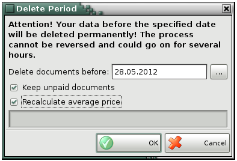

Delete Period
Clean up data is done for faster processing the information. When database gets very large and contains a lot of records, the program overloaded and searching is generating very slowly. In that case it is better to remove a part of information for a specific time period.
When you start the function Delete Period you must enter password in the window. Because of the specificity of the operation, is recommended to be performed by the admistrator or owner.
From the next window you choose the date and the options: keep unpaid documents or/and recalculate average price.

�2006-2015 Microinvest, All rights reserved